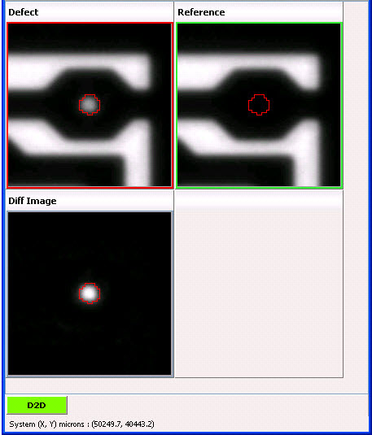
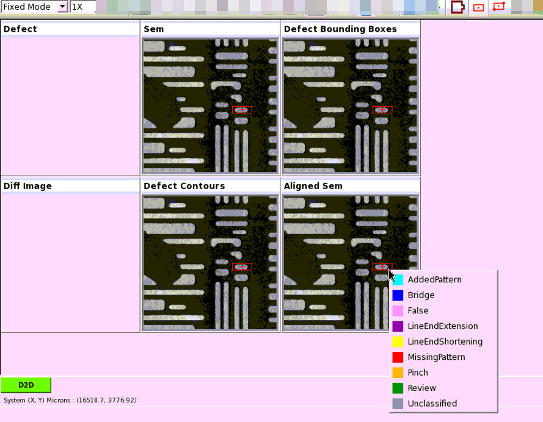
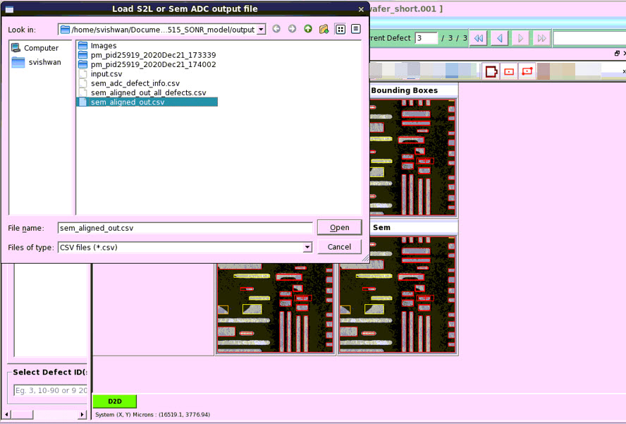

Displaying Defect Contours
Defect Contour
shows the contour around the defective region on the images.
Procedure
- Click the Defect Contour button
in the IMU window toolbar.Figure 1. Defect Contour Button

- A contour is displayed in
red as shown in Figure 2. If the defect contour has any holes, then
the holes are displayed in yellow. Figure 2. Defect Contour Example
- Defect Contours can be displayed
in the following images:
Defect Images
Defect
Reference
Defect2
Reference2
Reflected Defect
Reflected Reference
Reflected Defect2
Reflected Reference2
Functional Images
Diff Image
Avg Image
Sum Image
Custom
All ZI Images
Other Images
- In addition to the defects marked after
running SEM ADC, defect bounding boxes can be manually created on
the IMU using the Create Defect Bounding Box button in
the IMU toolbar.
This button displays a bounding box rectangle on Aligned Sem, Sem, Defect Contours and Defect Bounding Box images. The size and location of the rectangle can be manually adjusted and the Defect Type can be saved with a right click. The type of the existing defects (marked after SEM ADC) can be modified using the right-click option.
Figure 3. Create Defect Bounding Box - You can save the created defects using the
Save Defect Info button .
The manually-created defects are appended either to the sem_aligned_out.csv or sem_aligned_out_all_defects.csv file
(based on the your selection in the Load S2L or Sem ADC output file
dialog box) and is saved as sem_adc_defect_ino.csv.Figure 4. Save Defect Info
Parent Topic: Image Measurement